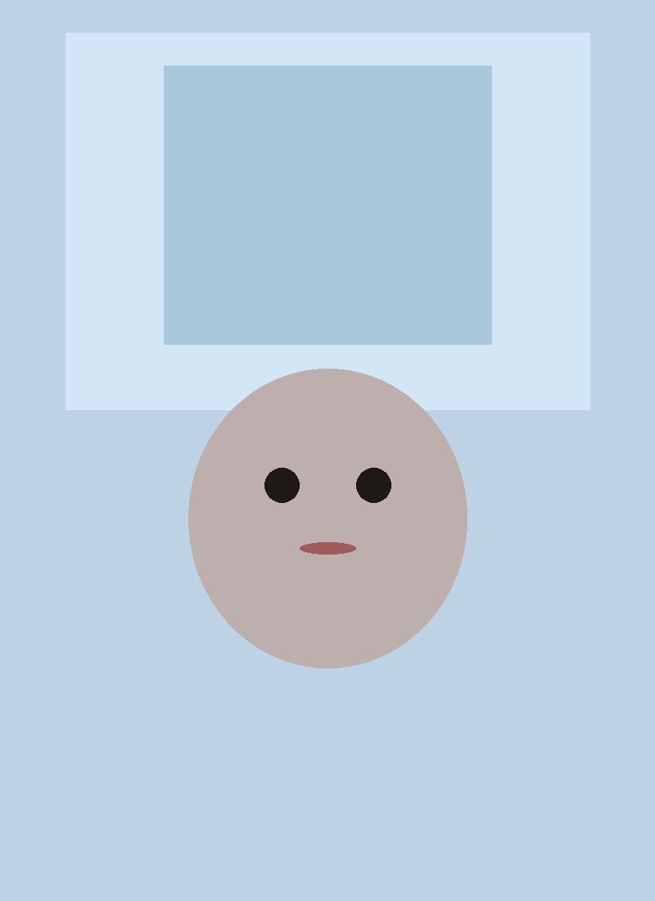
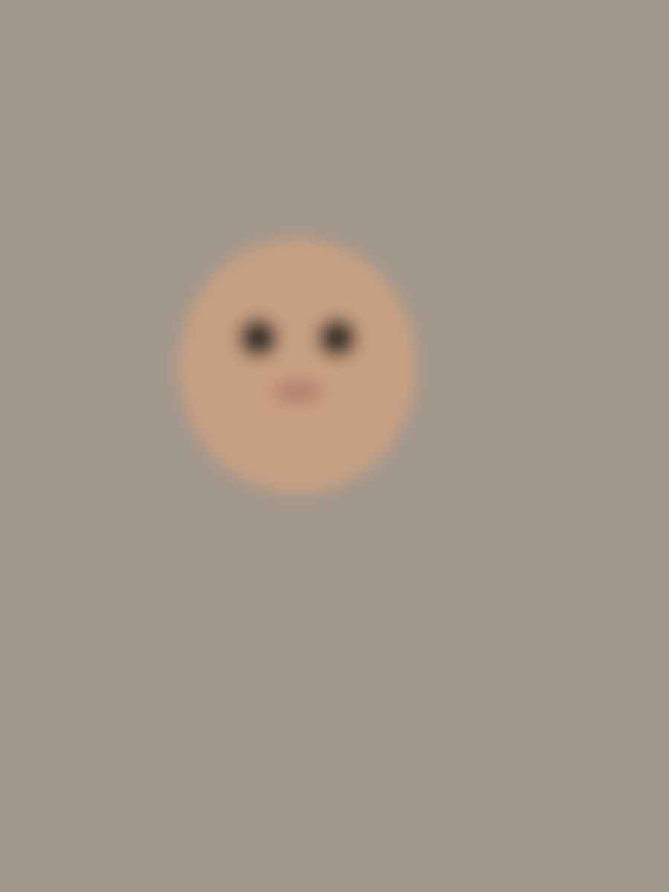
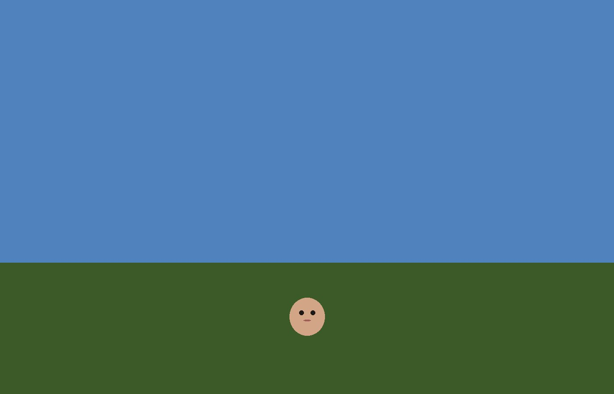
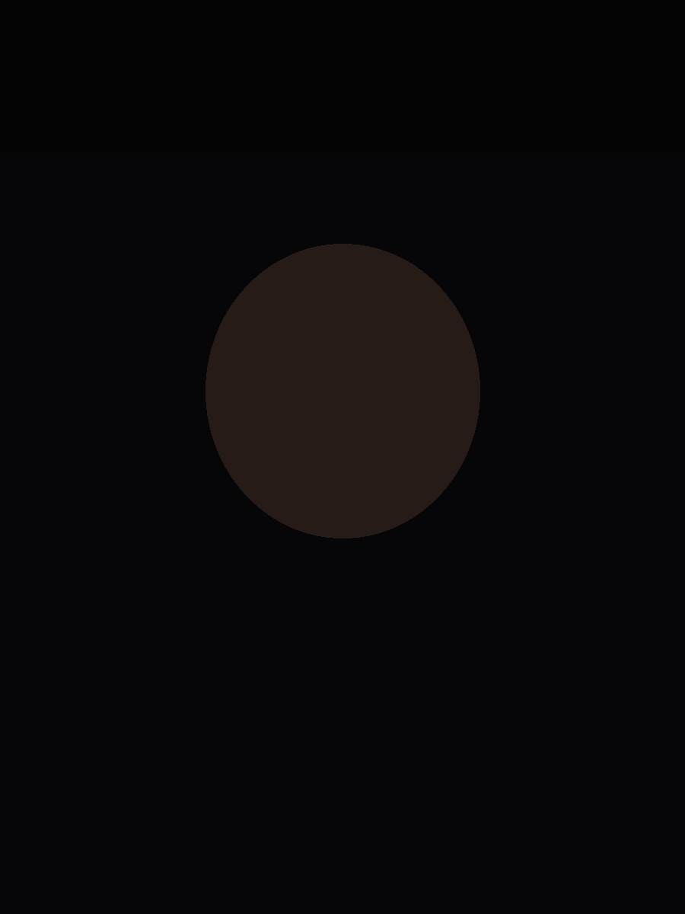

Dating profile photo review example
This is a Tinder photo review example: the same stamps the $19 autopsy prints after you pay. The pictures are synthetic QA photos shipped with the site, not someone’s stack and not a result we are reporting.
Your photos will not match this page. Actual stamps depend on the stack you upload. Scores stay locked until you pay. This example does not unlock a report.
In this demo, photo 4 is marked the way the upload screen asks “which one is first right now.” The group shot is that first photo. That is why it gets the kill stamp.
The kill shot
Put this first
The stack, ranked
Six synthetic frames, best lead at the top. The numbers are what the on-phone scorer returns for these files: light, sharpness, crop, group versus solo. They are opinions. Not a lab test, not a medical or psychological rating, and not a forecast of matches.




Delete or bury
Max two. Do it tonight. Do not negotiate with a photo that already lost.
Photo 2. Too dark. Buried is kindness. Deleted is cleaner.
Photo 5. Weakest leftover. It does not earn a slot.
Three fixes. That's the sport.
Light
Light — Your stack is not a cave, but it's flat. Take the next first-photo by a window, face turned a few degrees off camera. Even light makes you look like someone she could talk to.
Crop
Crop — A crop will not save a group shot. You need a solo. Until then, bury the group and do not lead with it.
Expression
Expression — Photo 4 is a group. She cannot tell which face is yours. Get a solo looking at the lens. One person. One frame.
These three lines are the scorer’s words for this stack. The light note follows the kill shot, which here is the group. The dark frame is the bury call above.
Run it on your photos. $19.
Upload 4–6 dating photos. We stamp the kill shot, tell you what goes first, bury at most two, and give three fixes. Scores stay locked until you pay. One time. No subscription.
Run the $19 autopsy 4–6 dating photos. 21+. No nudes.